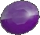
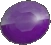
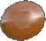
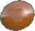
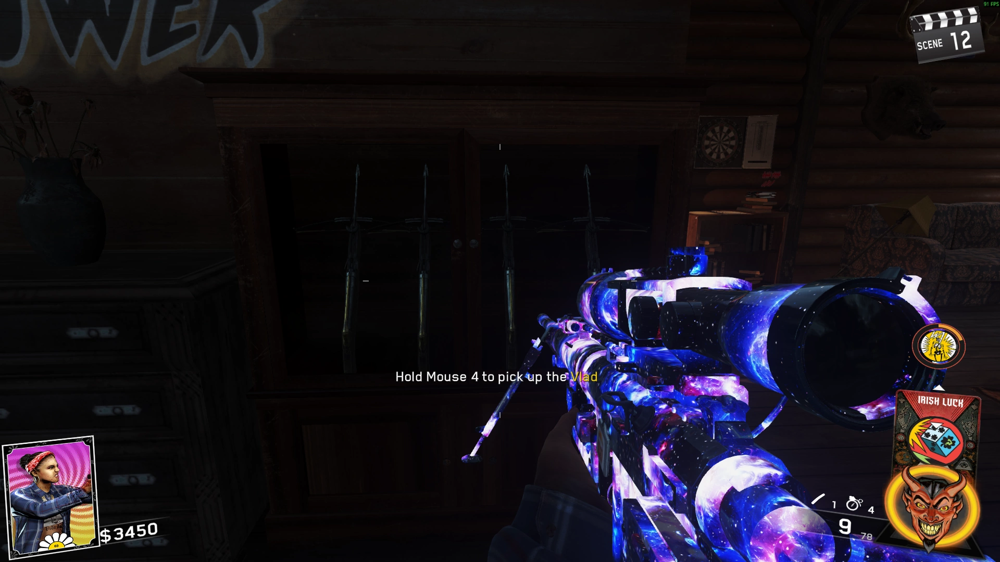
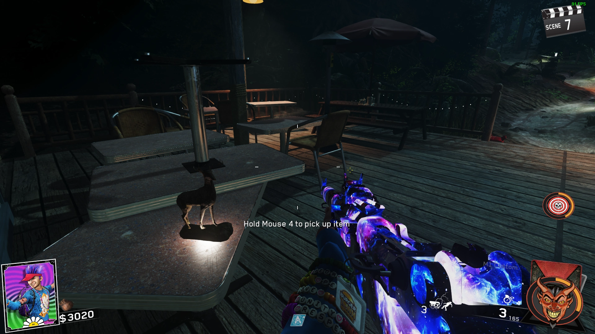
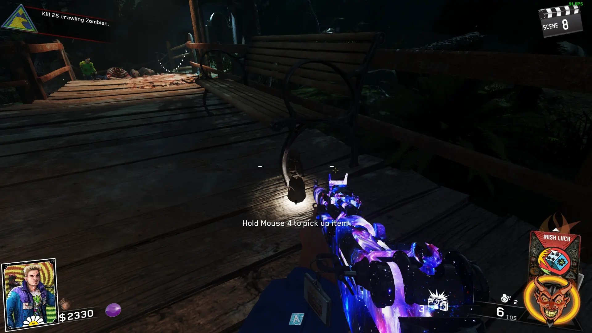
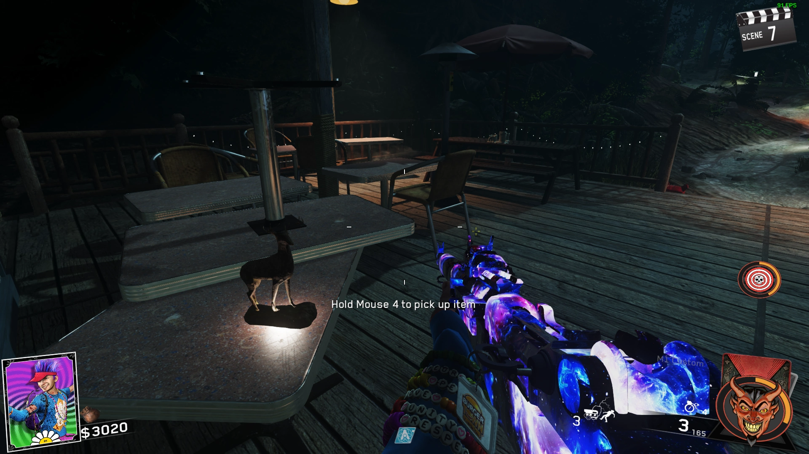
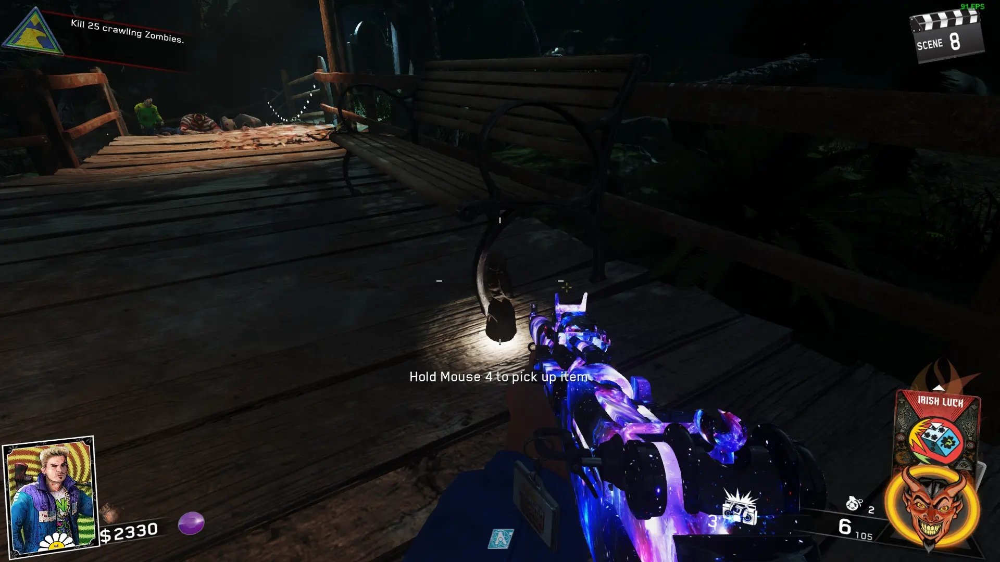

Revocator
Lawnmower


Electric Trap
Sentry Turret
Window Laser Trap


Fireworks
Medusa Device
Boom Box
Balloon Trap
Kindle Pops
Memory Charms
Shovel

Take the Shovel to the Swamp Area, place it on a Gravestone and kill the 5 Skeletons that spawn, then interact with it
Ability: ????
Arrowhead

Place the Arrowhead on the Building next to the Archery Range in the Recreational Area, enter Rave Mode and shoot the Targets as fast as possible
Ability: Makes you auto lock-on to zombie's heads instead of body
Ring


Place the Ring next to the TV near the Fireplace at Spawn, shoot the Lamp above the Fireplace to Shine it on the Ring, then interact with it
Ability: ????
Bird Mask


Place the Bird Mask on the Blank Painting in the Mess Hall and shoot the Keys, then interact with it
Ability: ????
8 Ball


Take the 8-Ball upstairs in Spawn, place it on a Pool Table, shoot the Cue Balls, then interact with it
Ability: Sliding Damages Zombies
Fish


Place the Fish on the Docks next to where the Boat is, A Ghost fish will spawn in the Water, throw a Grenade at the Fish, then interact with it
Ability: Check Momentum Perk in MP
Frog


Place the Golden Frog at the Swamp Area, Ghost Frogs will spawn in Rave Vision, then Jump from a high point in Rave Mode and Melee on all the Frogs
Ability: Sprint in Water
Pacifier

Place the Pacifier on the Counter in the Mess Hall, complete the Round inside the Mess Hall, then interact with it
Ability: Damages Zombies that Hit You
Boots


Place the Boots in a Cabin, follow the Red Footsteps, a Slasher Jumpscare will occur
Go to Spawn and follow more Footsteps, a Slasher Jumpscare will occur
Go to the Docks and follow more Footsteps, then go back to the Cabin and interact with the Boots
Ability: Reviving a Teammate will kill nearby Zombies
Crossbows
Take a Sausage from the Buck in the Bathroom in Kevin's Cabin
Find 3 Deer Heads around the Map

Enter Rave Mode and throw Sausage at the Deer Heads, shoot Symbols off the back of the Deer when they fly off the Wall, then interact with them
Take a Crossbow from the Cabinet in Spawn
Crossbow Upgrades
Find the Statue for your Upgrade

 




Place them on the Speakers by the Rave Stage
Damage Zombies until they Explode into Dust, then Pick up the Statue
Go to a Large Animal Statue, place your Statue, shoot it 10 Times with the Crossbow, then pick up the Upgraded Crossbow
Smiler Wonder Weapon
Complete the Main Easter Egg
Go to the Slasher's Lair
The Smiler will be in the corner of the Room next to the Zombie Knife Throwing Game
Ghost and Skulls
Kill exactly 1 Zombie with the Log Trap by the Docks
Kill exactly 9 Zombies with the Woodchipper Trap by the Archery Range
Kill exactly 9 Zombies with the DJ Trap by the Rave Stage
Kill exactly 2 Zombies with the Waterfall Trap near Spawn
Go to the Next Round and Throw a Pouch into the Fireplace in Spawn, take note of the Symbol on the Ghost and Skulls Machine and ADS at it
Go to the Next Round and Enter Rave Mode, find the correct Symbol around the Map and ADS at it (You can Reroll it by going to the Next Round)


Hit the Skull during the Zombie Throwing Knife Game
Go into Rave Mode and dind the Symbols that Spell Skull in the same Locations above and ADS at them in order
Ride the Boat and Complete the Mini Ghost and Skulls Game above the Lake
Obtain the Electric Crossbow and Shoot the Ghost and Skulls Machine
Entangle and Shoot Colored Ghosts at the Corresponding Colored Skulls
Try and keep track of the Skull Colors as the Skulls will sometimes go Blank
Shoot the Red Skulls Trying to Escape with a Red Ghost, if 3 Escape then you Lose, Shoot the Machine again to Reactivate it
When you Complete it, you will get Perkaholic and a Skull Token
Pack-a-Punch
Turn on Power, Build the Boat, and the Projector
Pick up the First Reel at the docks

Pick up the Second Reel on Turtle Island next to a Green Picnic Table

Double Pack a Punch
????If you have completed the Zombies in Spaceland Main Easter Egg you will already have Double PaP Unlocked????
Open Pack-a-Punch, then interact with the Computer at Spawn

Wait a few Rounds and the Alien Fuses will appear

Go to PaP Machine and install the Fuses

Main Easter Egg
Build the Boat, then talk to Kevin Smith at his Cabin on the Island
Pick up the Picture at the Rave Stage behind the Burning Man
Start a Rave Vision Ritual in the Thunderbird Theater, shoot Zombie Arms to collect their Souls
Once enough Souls are collected, interact with the Picture and a Slasher will spawn, after killing him you can pick up the Picture
Talk to Kevin again
Pick up the Picture upstairs in Spawn near Bunk Beds
Take the Picture to the Recreational Area and place it, then shoot the Legs off of Zombies and kill the Crawlers to collect their Souls
Once enough Souls are collected, interact with the Picture and a Slasher will spawn, after killing him you can pick up the Picture
Talk to Kevin again
Pick up Jay's Skull in the Power Room
Bring the Skull to the Docks and place it down to start a Ritual, Headshot Zombies to collect their Souls
Once enough Souls are collected, interact with the Picture and a Slasher will spawn, after killing him you can pick up the Skull
Go to Power Room and have all Players press a Red Button with a White Light above it
**PREPARE FOR THE BOSS FIGHT**
Ride the Boat with Kevin, and he will turn into the Super Slasher
Fill all the Skull Orbs with souls, Blue Beams shoot up when it's full (The Orbs will slowly drop, so complete this as fast as possible)
Once the Orbs are full, lead the Super Slasher into the Blue Circle and shoot him
Purple Symbols will be on the Super Slasher, shoot them to make him go back onto his Cabin
Stand in the Green circles to avoid taking Damage, survive inside the Circle
Repeat this 2 more times to kill the Super Slasher
Pick up the Soul Key, and the Ending Cutscene will Play

You can Play as Kevin by Entering a Code using the D-Pad in the Lobby Quickly
Right, Left, Left, Down, Down, Right